Flutter menyediakan berbagai widget inputan (Basic Form) yang berfungsi untuk menerima nilai dari pengguna, seperti TextField, TextFormField, CheckBox, Switch, Dropdown, Radio, Dialog, DatePicker, BottomSheet, dan Snackbar.
Widget-widget ini digunakan untuk menampilkan tampilan inputan, memvalidasi apakah inputan sudah sesuai dengan aturan yang ditetapkan, kemudian mengambil nilai inputan tersebut setelah proses pengecekan selesai dilakukan.
Pada praktikum ini, mahasiswa mempelajari perbedaan antara TextField dan TextFormField. TextField merupakan widget dasar untuk menerima input teks dari keyboard, sedangkan TextFormField merupakan versi lengkap dari TextField yang sudah terintegrasi dengan logika validasi dan manajemen state melalui Form dan GlobalKey<FormState>.
Selain itu, dipelajari pula konsep TextEditingController untuk mengambil nilai inputan, method validate() untuk menjalankan validasi pada seluruh TextFormField, method setState() untuk memperbarui tampilan, serta penggunaan kata kunci const untuk meningkatkan performa aplikasi.
TextField dan TextFormField.TextEditingController.validator pada TextFormField.GlobalKey<FormState> dan method validate() untuk mengelola validasi form secara kolektif.SnackBar.Pada langkah ini dibuat sebuah basic form menggunakan widget TextField untuk menerima inputan nama, dan ElevatedButton sebagai pemicu event.
A. Membuat File Dart Baru
Buat file dart baru dengan nama form-textfield di dalam folder lib, kemudian buat tampilan awal menggunakan Text, SizedBox untuk memberi jarak antar widget, TextField untuk menerima inputan, dan ElevatedButton untuk memberikan event listener.
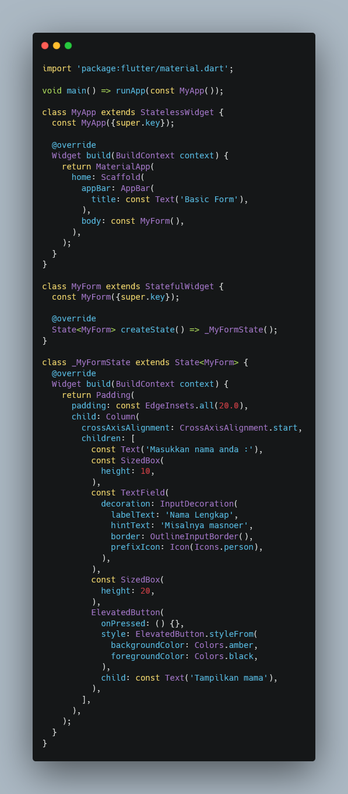
B. Menambahkan TextEditingController
Pada class _MyFormState ditambahkan variabel _textEditingController bertipe TextEditingController yang berfungsi untuk mengambil inputan dari user. Method dispose() digunakan untuk membersihkan (menghapus) controller dari memori ketika widget sudah tidak digunakan lagi, agar tidak terjadi kebocoran memori (memory leak).
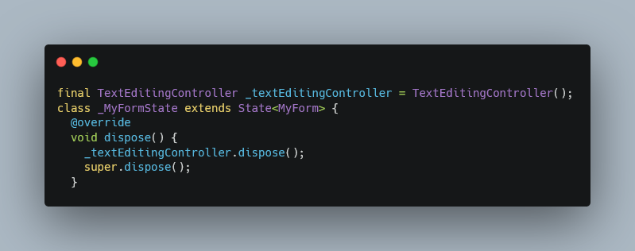
C. Menambahkan Property pada Widget TextField
Widget TextField ditambahkan beberapa property, yaitu controller: _textEditingController agar nilai inputan dapat diambil, keyboardType: TextInputType.text untuk menentukan jenis inputan yang boleh dimasukkan oleh user, serta onChanged yang berfungsi sebagai event listener untuk menjalankan sebuah fungsi setiap kali pengguna sedang mengetikkan teks.
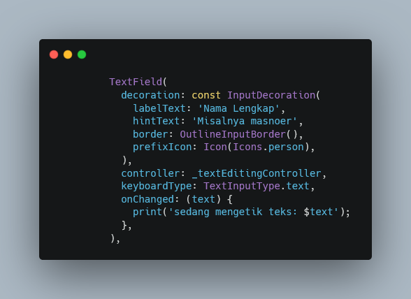
D. Menambahkan Aksi pada ElevatedButton
Pada property onPressed milik ElevatedButton ditambahkan variabel inputText yang berfungsi menampung nilai inputan dari _textEditingController.text, kemudian nilai tersebut ditampilkan menggunakan widget ScaffoldMessenger dan SnackBar yang muncul di bagian bawah layar.
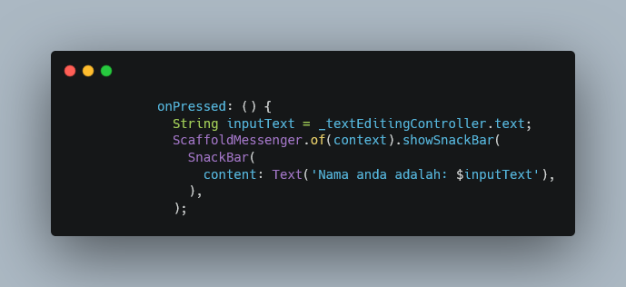
Setelah seluruh kode program selesai ditambahkan, simpan file kemudian jalankan aplikasi dengan perintah flutter run atau melalui tombol Run pada Visual Studio Code.
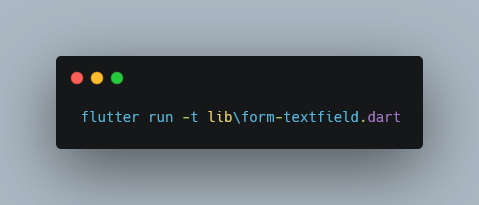
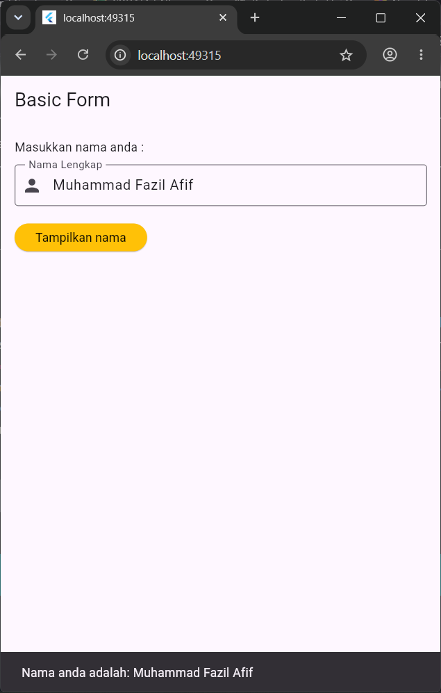
Pada langkah ini dibuat basic form menggunakan 2 buah widget TextFormField (nama dan email) yang dilengkapi dengan validasi, serta 1 buah ElevatedButton untuk melakukan submit.
A. Membuat File Dart Baru
Buat file baru di dalam folder lib dengan nama form-textformfield, kemudian buat tampilan awal menggunakan 2 buah widget TextFormField dan 1 buah ElevatedButton yang dibungkus dengan widget Column.
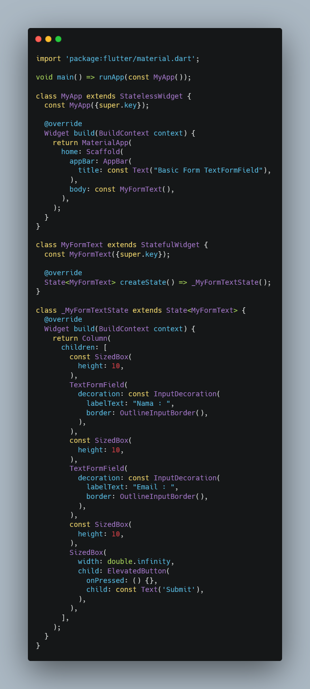
B. Menambahkan GlobalKey, Controller, dan Method Submit
Pada class _MyFormTextState ditambahkan variabel _formKey bertipe GlobalKey<FormState> yang berfungsi untuk mengidentifikasi dan mengakses status form (FormState) secara global dari luar widget, misalnya dari dalam onPressed.
Ditambahkan juga _nameController dan _emailController untuk menampung inputan nama dan email, method dispose() untuk membersihkan kedua controller, serta method _submitForm() yang akan memanggil _formKey.currentState!.validate() untuk menjalankan validasi pada seluruh TextFormField di dalam form.
Jika seluruh validator mengembalikan nilai null (tidak ada error), maka validate() akan mengembalikan nilai true dan nilai inputan akan ditampilkan melalui SnackBar.
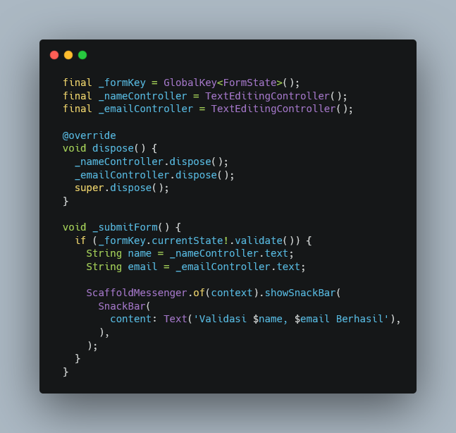
C. Membungkus Tampilan dengan Widget Form
Tampilan yang sebelumnya menggunakan Column dibungkus dengan widget Form dan diberikan property key: _formKey, agar FormState dapat diakses dan divalidasi melalui _formKey tersebut.
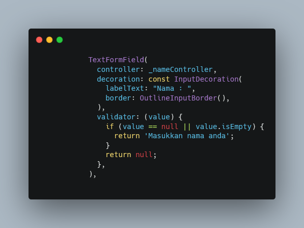
D. Menambahkan Validator pada TextFormField
Widget TextFormField nama diberikan controller: _nameController dan property validator yang akan mengembalikan pesan "Masukkan nama anda" apabila nilai inputan kosong atau bernilai null.
Widget TextFormField email diberikan controller: _emailController dan validator yang memeriksa apakah inputan kosong, serta memeriksa apakah inputan mengandung karakter @ menggunakan value.contains('@') untuk memastikan format email valid.
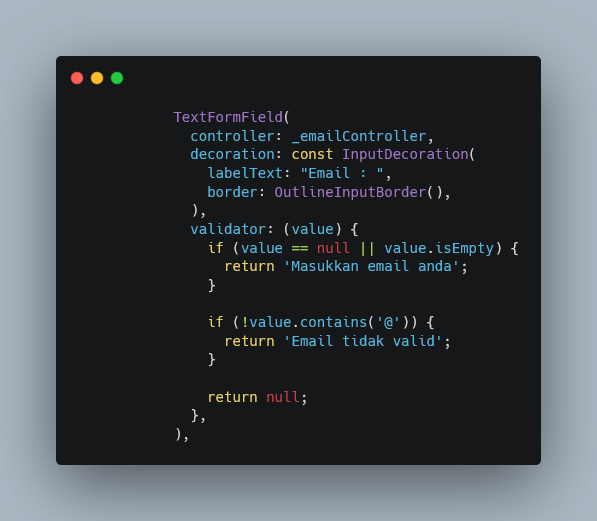
E. Menghubungkan Tombol dengan Method Submit
Property onPressed pada ElevatedButton diarahkan untuk memanggil method _submitForm, sehingga ketika tombol Submit ditekan, seluruh proses validasi dan penampilan hasil inputan akan dijalankan.
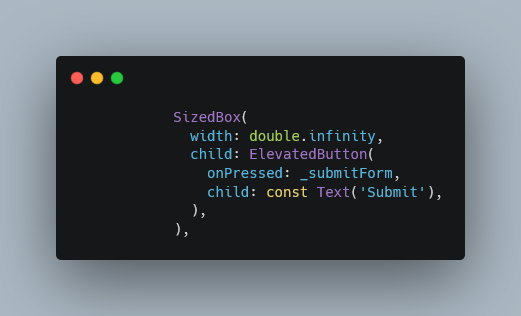
Setelah semua langkah selesai, simpan file kemudian jalankan aplikasi dengan perintah flutter run.
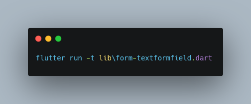
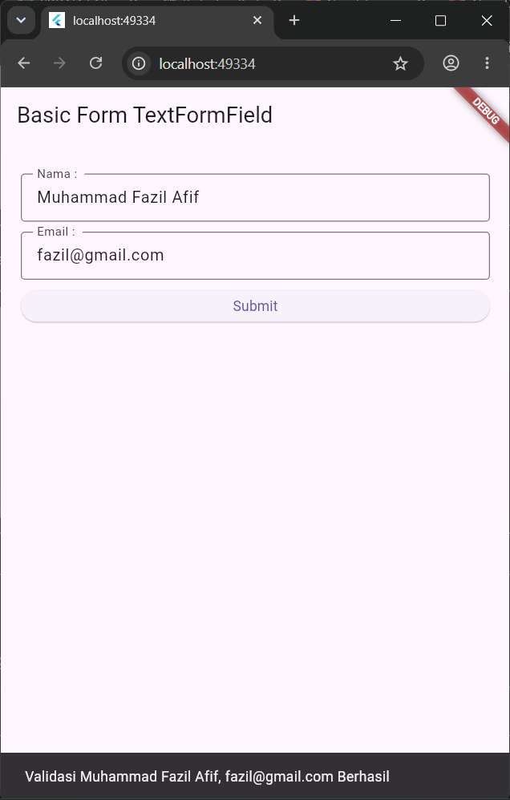
Tugas Kelas B pada praktikum ini adalah membuat form pendaftaran pengguna yang terdiri dari 4 buah inputan, yaitu Nama, Email, Password, Confirm Password, dan 1 buah tombol Submit.
Tugas ini dibuat dalam 2 buah file dart, yaitu main.dart sebagai file utama aplikasi dan user_registration_form.dart sebagai file yang berisi tampilan dan logika form pendaftaran.
File ini merupakan titik masuk (entry point) dari aplikasi Flutter yang dijalankan pertama kali oleh fungsi main() melalui runApp(const MyApp()).
MyApp — Merupakan StatelessWidget yang menjadi root aplikasi karena tampilannya tidak memiliki state yang berubah.MaterialApp — Digunakan sebagai widget utama yang membungkus seluruh aplikasi, memberikan tema Material Design, dan mengatur properti seperti title dan theme.title: 'Tugas Kelas B' — Judul aplikasi yang akan tampil pada task manager perangkat.theme: ThemeData(primarySwatch: Colors.blue) — Mengatur warna utama (tema) aplikasi menjadi warna biru.home: const UserRegistrationForm() — Menentukan halaman pertama yang akan ditampilkan ketika aplikasi dijalankan, yaitu widget UserRegistrationForm yang berada pada file user_registration_form.dart.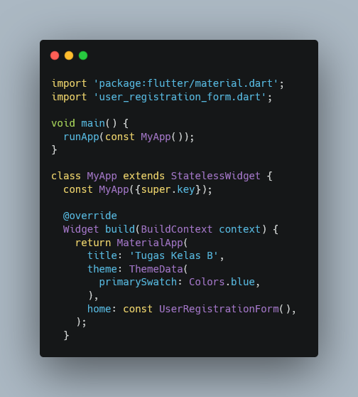
File ini berisi implementasi form pendaftaran menggunakan StatefulWidget karena tampilannya perlu berubah (menampilkan pesan error atau SnackBar) sesuai dengan interaksi pengguna.
1. Deklarasi Key dan Controller
Variabel _formKey bertipe GlobalKey<FormState> dideklarasikan untuk mengakses FormState secara global. Empat buah TextEditingController, yaitu _nameController, _emailController, _passwordController, dan _confirmPasswordController, dideklarasikan untuk menampung nilai inputan dari masing-masing TextFormField.
2. Method dispose()
Method ini dipanggil secara otomatis ketika widget dihancurkan. Di dalamnya, keempat controller di atas dibersihkan menggunakan method dispose() masing-masing untuk mencegah kebocoran memori, kemudian diakhiri dengan pemanggilan super.dispose().
3. Method _submitForm()
Method ini dipanggil ketika tombol Submit ditekan. Method akan memeriksa _formKey.currentState!.validate() terlebih dahulu; apabila seluruh validator pada TextFormField mengembalikan nilai null (valid), maka nilai name diambil dari _nameController.text dan ditampilkan pesan "Pendaftaran berhasil untuk $name!" menggunakan ScaffoldMessenger dan SnackBar.
4. Widget Form dan TextFormField
Seluruh inputan dibungkus dengan widget Form yang diberikan key: _formKey, kemudian di dalamnya digunakan ListView agar tampilan dapat di-scroll apabila keyboard menutupi sebagian layar. Berikut penjelasan validasi pada setiap field:
controller: _nameController. Validator akan mengembalikan pesan "Masukkan nama anda" apabila nilai inputan kosong atau null.controller: _emailController dengan keyboardType: TextInputType.emailAddress. Validator memeriksa apakah inputan kosong, kemudian memeriksa apakah inputan mengandung karakter @ menggunakan value.contains('@'); jika tidak, akan muncul pesan "Email tidak valid (harus mengandung @)".controller: _passwordController dengan property obscureText: true agar teks yang diketik tersembunyi (berbentuk titik-titik). Validator memastikan inputan tidak boleh kosong.controller: _confirmPasswordController dengan obscureText: true. Validator memeriksa apakah inputan kosong, kemudian membandingkan nilainya dengan _passwordController.text menggunakan kondisi value != _passwordController.text; apabila berbeda, akan muncul pesan "Password dan Confirm Password tidak sama".5. Tombol Submit
Widget SizedBox dengan width: double.infinity digunakan agar tombol ElevatedButton memenuhi lebar layar. Property onPressed pada tombol ini diarahkan untuk memanggil method _submitForm, sehingga proses validasi dan penampilan pesan sukses akan dijalankan ketika tombol ditekan.
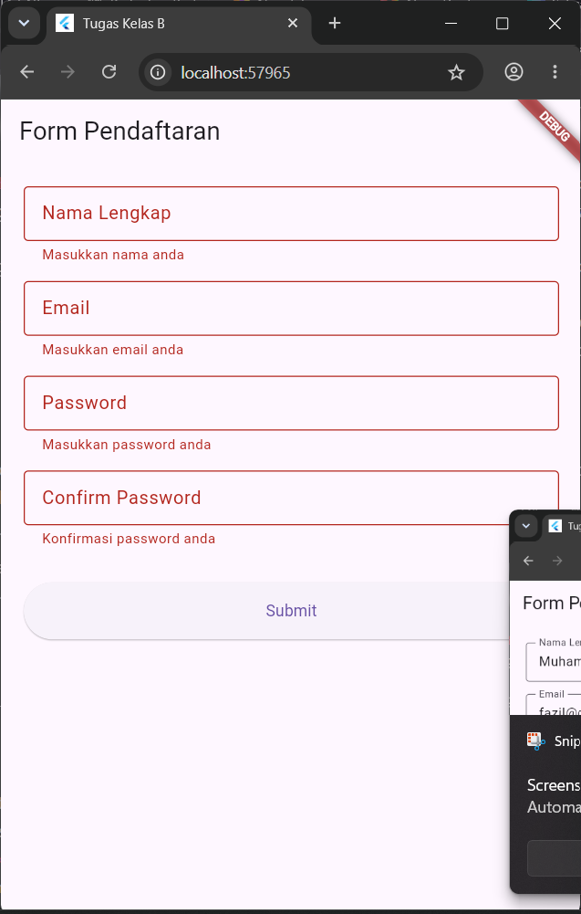
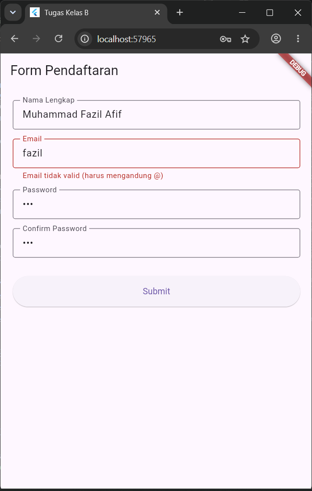
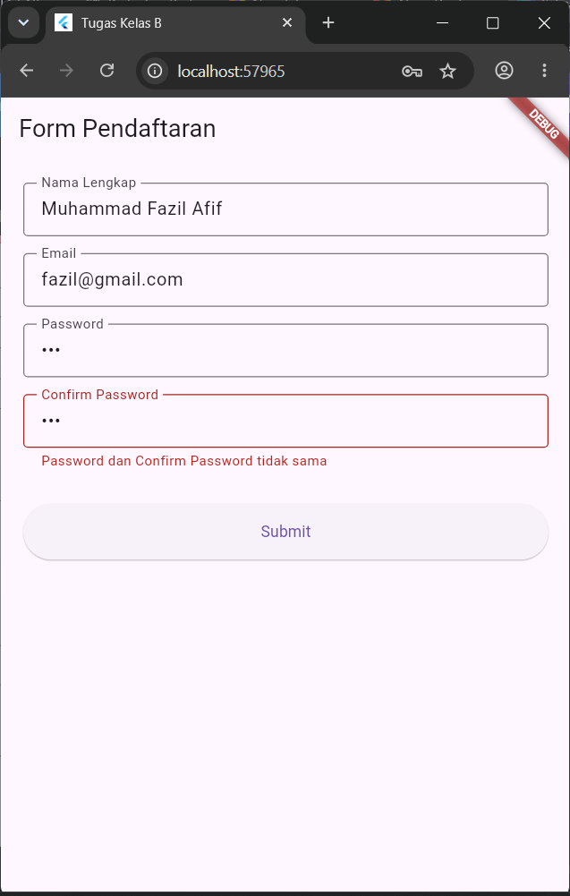
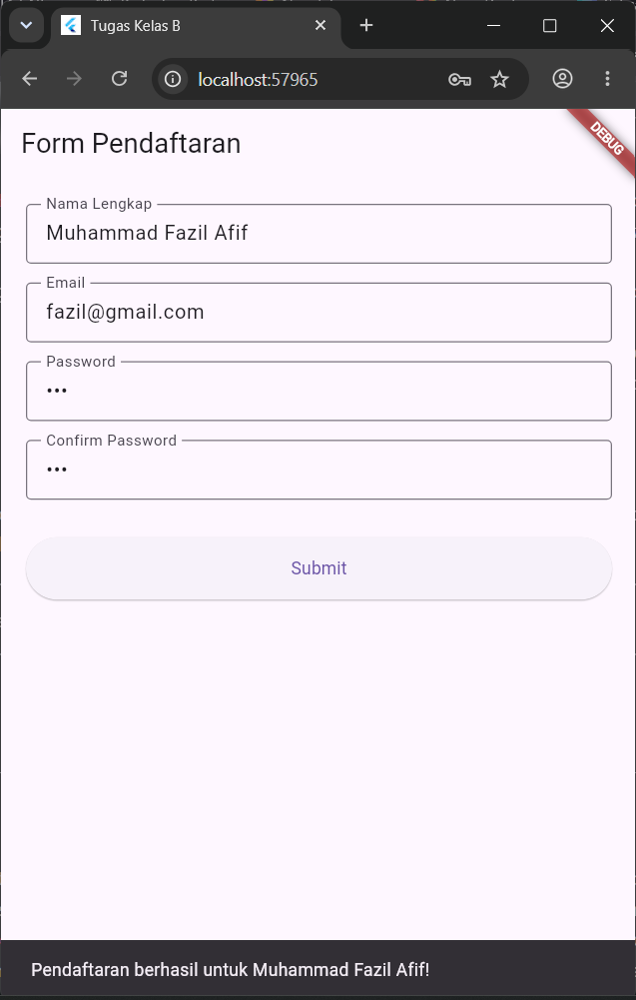
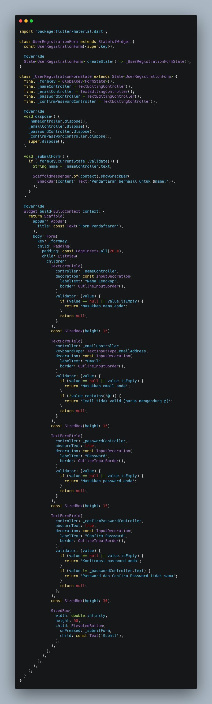
Berdasarkan praktikum yang telah dilakukan, dapat disimpulkan bahwa Flutter menyediakan dua jenis widget inputan utama, yaitu TextField yang bersifat sederhana untuk menerima input teks, dan TextFormField yang sudah terintegrasi dengan sistem validasi melalui widget Form.
Penggunaan TextEditingController memungkinkan nilai inputan diambil dan diproses lebih lanjut, sedangkan GlobalKey<FormState> beserta method validate() memungkinkan validasi dijalankan secara kolektif terhadap seluruh field dalam satu form hanya dengan satu kali pemanggilan.
Pada tugas pembuatan form pendaftaran pengguna, keempat prinsip tersebut diterapkan untuk memvalidasi nama, email (harus mengandung karakter @), serta kecocokan antara password dan confirm password.
Dengan memahami konsep basic form ini, mahasiswa dapat membangun form inputan pada aplikasi Flutter yang lebih terstruktur, aman, dan mudah untuk divalidasi.